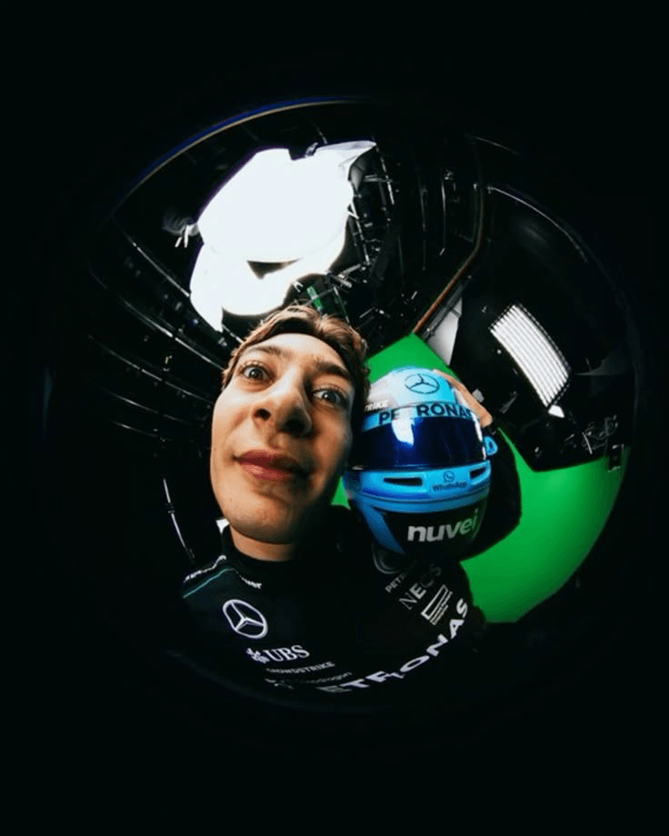
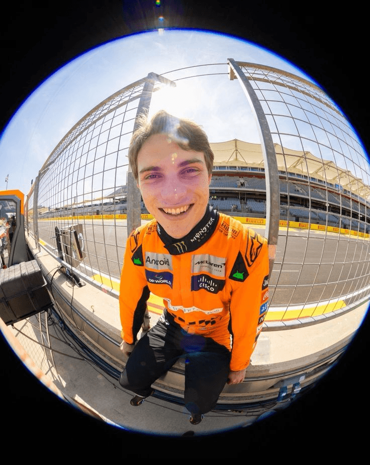
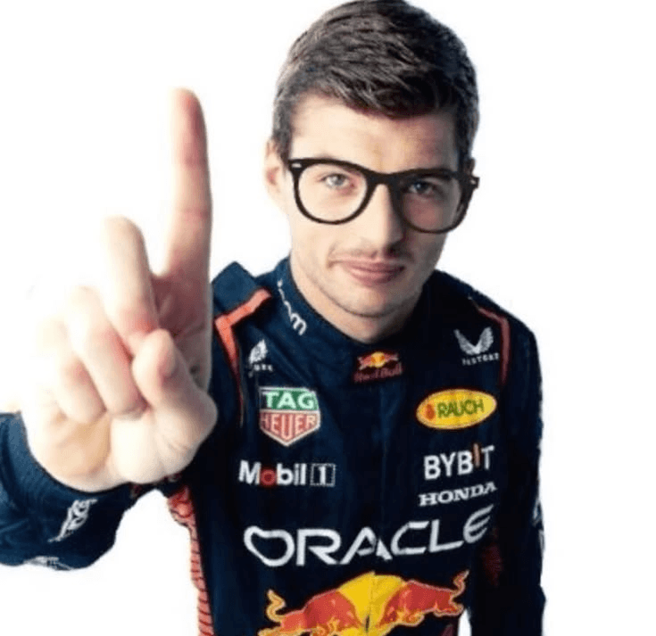
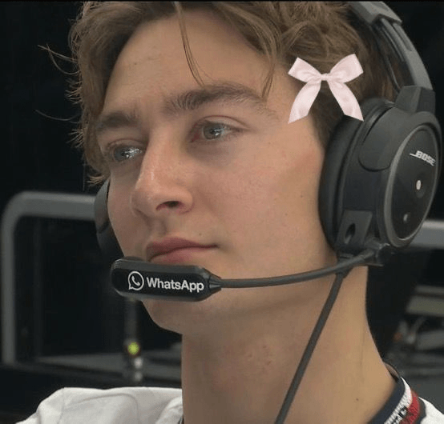
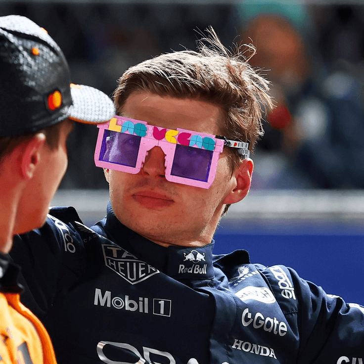
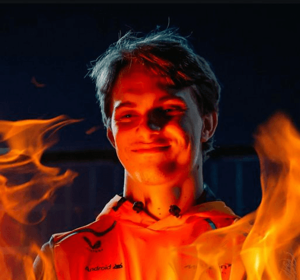

пространство философов
“Внезапно, тщательные исследования конкурентов и по сей день остаются уделом либералов, которые жаждут быть представлены в исключительно положительном свете.”
— Иванов И. И.
Новости

Джордж Расселл возглавил модный показ в Брэкли
Гонщик Mercedes официально запретил инженерам использовать любые цвета в отчетах, кроме лазурно-синего. По его словам, это критически важно для аэродинамики его новой прически.

Пиастри обыграл экстрасенсов
Оскар просто молча смотрел на них своим фирменным взглядом. Медиумы не смогли прочесть ни одной эмоции и признали поражение.

Ферстаппен выиграл гонку, не выходя из симулятора у себя дома
Макс случайно подключился к реальной трансляции Гран-при через свой игровой руль. Думая, что тестирует новый мод для игры, но случайно приехал первым в реальной гонке и получил 25 очков в чемпионате.

Джордж Расселл ушел в монастырь ради Т-позы
Пилот Mercedes решил прокачать свое ментальное здоровье и отправился в горы. Местные жители утверждают, что Джордж уже три дня неподвижно стоит на вершине холма с раскинутыми руками, ловя сигналы Wi-Fi и идеальный баланс болида.

Девушки рулят в Red Bull
Команда официально признала, что женская половина фанатов разбирается в тактике пит-стопов намного лучше штатных инженеров. Болельщицы требуют выдать им болид.
О нас
Знакомьтесь, это Оскар Пиастри — наш главный менеджер по антикризисному управлению. Пока в офисе полыхают дедлайны, а серверы охвачены огнем, Оскар просто стоит рядом с абсолютно непроницаемым лицом. Его легендарное хладнокровие — главный секрет стабильности всей нашей компании.
